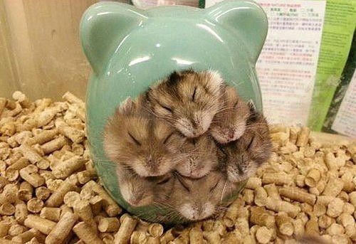
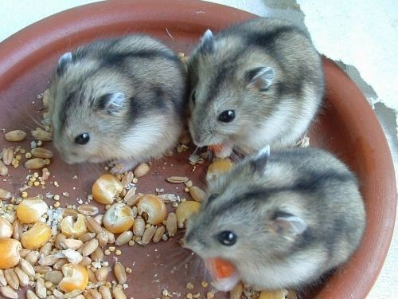

Как содержать джунгарских хомяков?
Одними из самых забавных домашних питомцев-малюток являются джунгарские хомяки. В обиходе эти малыши-грызуны именуются гораздо проще – джунгариками. Эти животные весьма симпатичны, способны доставлять хозяевам массу положительных эмоций и впечатлений. А их малый размер предполагает минимальный уход и заботы. Именно этим и обусловлена столь высокая популярность джунгариков среди тех, кто заводит дома живность.
И все же, любой джунгарский хомяк – это животное, которое нуждается в опеке человека, определенной заботе. Как ухаживать за ними, чем кормить – об этом ниже.
Где содержать хомяка?

В первую очередь питомцу потребуется клетка, которая должна быть значительно больше его самого. Джунгарики — невероятно активные животные, которые могут долгое время бегать по своему домику. Если малышу будет негде заниматься физическими нагрузками, он может даже заболеть. При выборе клетки учитывайте материал, из которого она создана. Не покупайте пластиковые дома, хомячку не составит труда перегрызть такие прутья и выбраться в квартиру, где он может погибнуть. Лучшим выбором станут не оцинкованные металлические прутья и пластиковый поддон, который в дальнейшем можно будет мыть.
Питомцев также можно держать в аквариуме. Для этого подойдут не слишком узкие варианты, где животному будет удобно бегать из стороны в сторону. Важно регулярно протирать стенки, на которых может скапливаться конденсат, способный привести к появлению бактерий.
В клетке также рекомендуется разместить:
- Поилку. Животное всегда должно иметь доступ к свежей воде. Достаточно разместить навесную поилку объемом около 50 мл.
- Кормушку. Небольшая мисочка для сухого корма займет от 3 до 10 см в ширину.
- Домик. Это максимально закрытое место, где хомяк должен чувствовать комфорт и уют. Там он сможет спать или прятаться, когда утомится от вашего общества.
- Лабиринты. Они могут быть сделаны из картона (в таком случае их придется регулярно менять), пластмассы, корней, веток.
- Колесо. Учитывая размеры джунгарских хомяков, лучше всего выбирать пластмассовое колесо с поперечными выступами, где они не смогут травмироваться.
- В качестве подстилки используйте специальный гигиенический наполнитель. Чаще всего он включают в себя прессованные опилки, которые поглощают посторонние запахи и отлично впитывают влагу. Допускается использование песка. Ни в коем случае не кладите на поддон вату, салфетки или тряпки, хомяк начнет их грызть и может отравиться вредными компонентами их состава. К тому же такие наполнители, хотя и впитывают влагу, но остаются мокрыми и могут со временем создавать неприятные запахи.
Чем кормить хомяка?
В вопросе питания джунгарские хомяки полностью зависят от человека. Они способны есть практически все, что попадет в их клетку, даже если еда может нанести вред их здоровью. Поэтому очень важно тщательно выбирать продукты, которыми вы собираетесь кормить своего питомца.
Основу рациона питания хомяков составляют зерновые культуры, которыми они питаются в естественных условиях. Их можно приобрести отдельно или в составе готовых сухих кормов. Такие корма содержат сбалансированное питание, включающееся все необходимые элементы и витамины. Кормовая смесь должна содержать овес, пшеницу, горох, кукурузу, семечки и орехи.
Фрукты и овощи также являются неотъемлемой частью рациона животного. Они содержат немалое количество витаминов и минералов, необходимых для правильной работы желудка и организма в целом. Подойдут кабачки, огурцы, морковка, кукуруза, свекла, а также разнообразная зелень: листья одуванчика, подорожника, петрушка, укроп или полевой клевер. В некоторых случаях хомяки могут есть сено, чтобы восполнить недостаток микроэлементов. При кормлении фруктами следите, чтобы среди них не было видов с повышенным содержанием кислоты (таких, как апельсины).

Не многие владельцы хомячков знают, что они нуждаются в прикормке белковыми продуктами несколько раз в неделю. Их можно кормить небольшими кусочками отварного мяса, предпочтительней куриного, вареными яйцами, обезжиренным творогом, йогуртом, а также кузнечиками, приобретенными в зоомагазине.
Несмотря на довольно богатую палитру продуктов, существует и немало нежелательных продуктов для питания. Такая еда может привести к появлению аллергии, расстройства желудка и пищевых отравлений. Джунгарских хомяков ни в коем случае нельзя кормить:
- продуктами, богатыми солями;
- специями и слишком пряной едой;
- сахаром, медом, шоколадом, поскольку эти животные склонны к появлению сахарного диабета;
- жирными молочными продуктами (молоком, сливками, сметаной);
- богатыми на кислоты фруктами (цитрусовыми, ананасами, гранатами, киви);
- грибами;
- жирным мясом (включая сосиски и колбасу).
Хомяков рекомендуется кормить дважды в день: утром и вечером. Количество сухого корма рассчитывайте так, чтобы питомец мог сделать небольшой запас на следующий день. Если вы даете ему свежие продукты, старайтесь проследить, чтобы он полностью съел их.
Вернуться назад